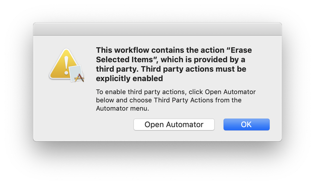

Enabling the Erase Service Plug-In
One of the newest restrictions introduced in macOS Mojave now requires explicit permission from the user to use third party Automator actions, which is what Permanent Eraser 2 uses for its Erase service. Upon using the Erase service from a contextual menu in Mojave's Finder, the user will see the following prompt:

- Click on the Open Automator button, which will launch that application.
- Select the Automator > Third Party Automator Actions... menu.
- In the Third Party Automator Actions window which appears, select the Enable Automator actions from third parties checkbox and click the OK button.
You are now set up to use third party Automator actions again. This process only needs to be performed once.